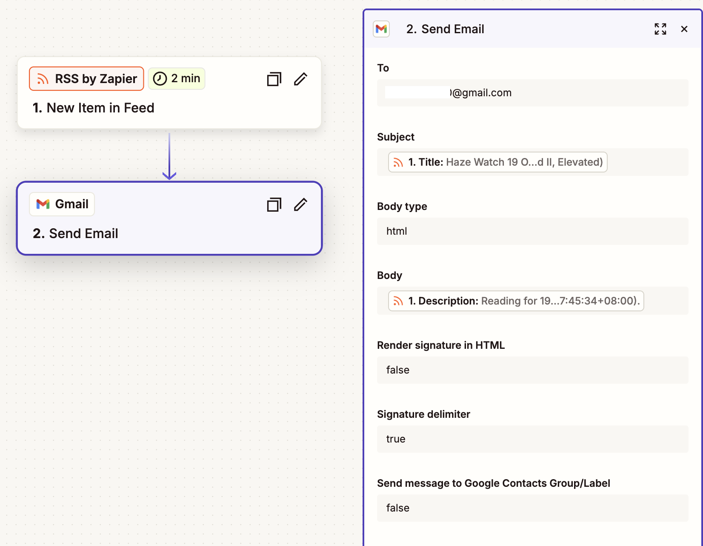
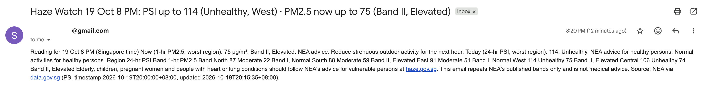
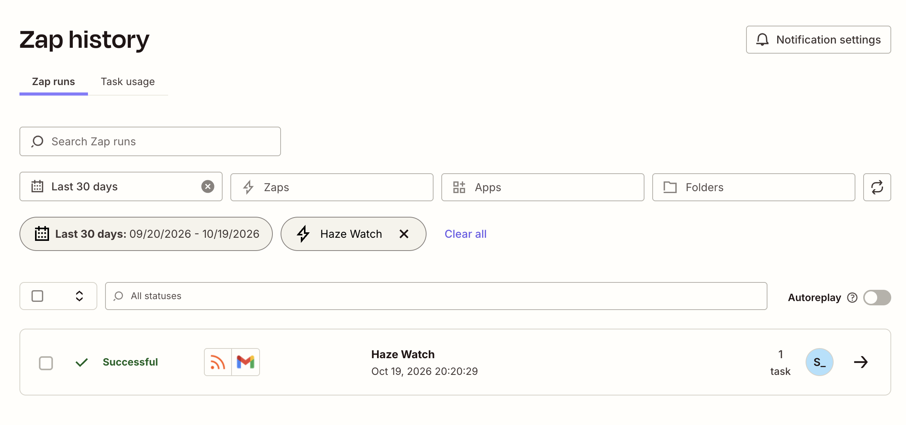
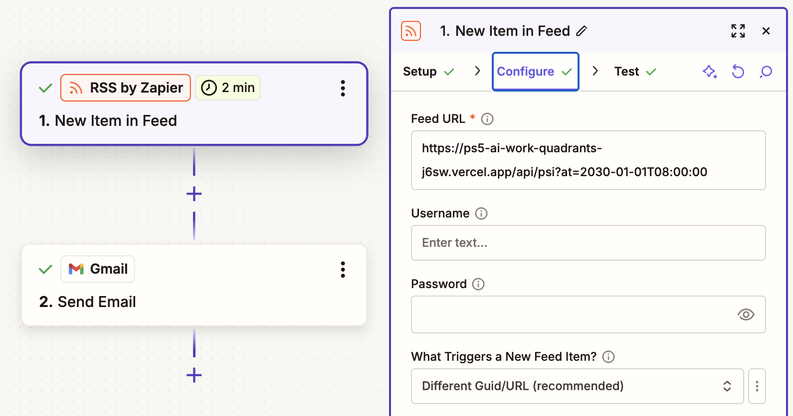
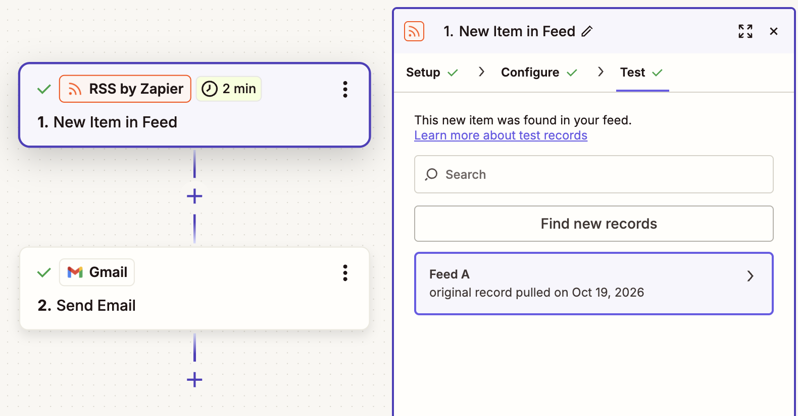
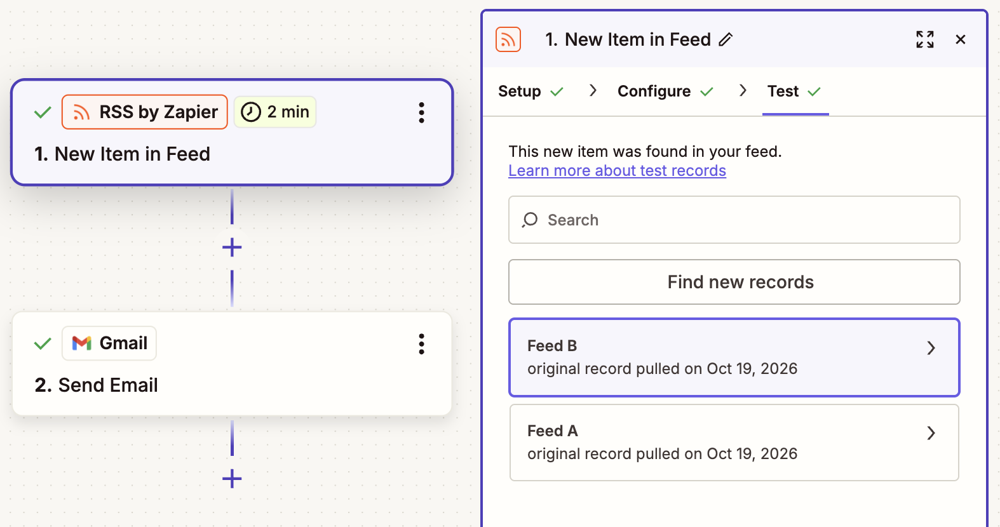
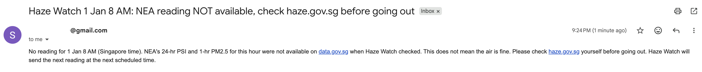

Problem Set 5 · Sean So · Step 1
My agent card | Haze Watch | finished 19 Oct 2026, 7:45 PM SGT
- The job: Emails me Singapore's latest official haze readings (24-hr PSI and 1-hr PM2.5 for each region, with NEA's band and advice) so that I, as a resident commuting and exercising outdoors, can decide whether to go out, cut back outdoor exercise or carry a mask.
- The trigger: A new NEA reading at 8 AM, 11 AM, 2 PM, 5 PM or 8 PM Singapore time, picked up by Zapier's free RSS by Zapier · New Item in Feed from my feed at
/api/psi, which reads NEA's data on data.gov.sg. - The tools: RSS by Zapier (read my feed) and one action, Gmail · Send Email from a personal Gmail account. My feed only reads data.gov.sg and writes nothing.
- It must never: send to anyone but me. The Gmail action's To field is typed in as my own address, with no mapped field, and CC and BCC are left empty. It also never gives its own health advice: it repeats NEA's published bands only.
- Where a person checks: I read each email when it arrives, at least in the morning and the afternoon, and before going out I spot-check one number against haze.gov.sg.
Step 3 · Our two-by-two map
Haze Watch sits in AI alone, with checks
Columns: work with a right answer | work with no single right answer. Rows: work that people and AI must do together | work that either of them can do alone.
right answer · together
no single right answer · together
right answer · either alone
● Haze Watch
no single right answer · either alone
Haze Watch is also the red “My PS5 agent” card in the bottom-left quadrant of the board above.
Step 2 · Runs, tricky case and fix
The Zap: one trigger, one action

/api/psi). Action: Gmail, Send Email. To is typed in as my own address, not mapped, so the Zap cannot email anyone else; Subject = feed Title, Body = feed Description (HTML). Address cropped.Runs checked against Zap history
| Run | Reading (SGT) | Email said | Checked against | Match? |
|---|---|---|---|---|
| 1 | Mon 19 Oct, 8 PM reading; Zap ran 8:20:29 PM, Successful | 24-hr PSI up to 114 (Unhealthy, West); 1-hr PM2.5 up to 75 (Band II, Elevated, West) | Zap history + NEA data for 8 PM, all 5 regions | Yes, all 10 numbers match |
| 2 | [date, time] | [worst PSI / PM2.5] | Zap history + haze.gov.sg | [yes/no] |
| 3 | [date, time] | [worst PSI / PM2.5] | Zap history + haze.gov.sg | [yes/no] |
Tricky case: NEA has no reading
The test: I point the trigger at an hour NEA has no data for (/api/psi?at=2030-01-01T08:00:00), as if NEA's reading were late or the data service were down.
What I expected beforehand (written 19 Oct 2026, before running it): the feed will come back empty, so Zapier will find no new item, the Zap will not run and no email will be sent. Nothing will look broken: no error in Zap history and no warning in my inbox. That silence is the failure, because I would read “no email” as “nothing to worry about” and might go out without checking, just when the haze data I rely on is missing.
What happened (19 Oct, about 9:10 PM): as I predicted. The feed came back with no item, and when I clicked Find new records Zapier found nothing new and showed no error or warning, only the old sample from my first setup. In live running this means no run and no email. There was also a second trap I had not predicted: when I tested the Gmail step, Zapier quietly reused that old sample and emailed me the 5 PM reading at 9:10 PM, which looked current at a glance.
The fix, and the tricky case rerun
The fix (committed to api/psi.js, 19 Oct about 9:20 PM): when NEA has no reading for a slot, the feed now publishes an item titled “NEA reading NOT available, check haze.gov.sg before going out” instead of nothing, so missing data turns into an email instead of silence.
The rerun (same address, 9:24 PM): Find new records now found a new record (Feed B), and the Gmail step sent “Haze Watch 1 Jan 8 AM: NEA reading NOT available, check haze.gov.sg before going out”. The silent failure is now a visible warning. Afterwards I set the Feed URL back to /api/psi so the live Zap keeps sending real readings.






Step 3 · Q1
Where does Haze Watch sit, and what does it mean for the person in the loop?
(a) Quadrant. AI alone, with checks (bottom left).
(b) The two questions. Right answer or not? Work with a right answer: each email reports a measured number that NEA publishes, and the band follows fixed NEA thresholds (for example, a 24-hr PSI of 101–200 is “Unhealthy”). In my runs the email either matched NEA's figure for that hour or it did not; there was nothing to judge. For example, run 1 reported a 24-hr PSI of 114 in the West and a 1-hr PM2.5 of 75, the same as NEA's published figures for 8 PM in all ten cells.. Together or alone? Work that either of them can do alone: I could check haze.gov.sg myself, and the Zap fetched and sent every reading without me, so neither needs the other for the task.
(c) The person in the loop. I stay at the gate after the email arrives, not before it: I read it, spot-check one number against haze.gov.sg (most often the worst region), and make sure the reading time is the latest one. The agent may fetch, label and send on its own, because a wrong or missing email costs little and I can check it in seconds. What it may not do is decide for me: whether to run outdoors or wear a mask stays my call, which is why the email repeats NEA's advice and adds none of its own. The agent would move to A person decides, AI alongside if it began recommending what I should do given my own health and plans, where there is no single right answer. If it were used for others, such as a school deciding to cancel outdoor PE, a teacher would have to sign off and it would move up to A person leads, AI inside.
(d) My group's view. [Do you agree with where your group placed its agents? Name one of the two questions you would answer differently, and why. A starting point: our group put “Pull daily closing prices” in AI alone, with checks, which I agree with for the same reason as Haze Watch. I would answer the first question differently for “Translate a product page”, which we placed as work with a right answer: tone and local wording have no single right answer, so I would move it to Agents run it, a person judges.]
Collaboration log
How I worked with AI
- Delegated to AI (Claude): reading the problem set, choosing a free data source (NEA via data.gov.sg), writing the small feed at
/api/psithat turns NEA's readings into RSS for Zapier, and drafting this page. - What I checked, and how: I compared the feed against NEA's JSON and haze.gov.sg for the same hour, checked the PSI and PM2.5 bands against NEA's July 2024 advisory, and checked that the Gmail To field is my own address.
- One AI error I caught: Claude designed the email body as an HTML table, but my first real email (run 1) arrived with the table flattened into one run-on line, so the region-by-region figures were hard to read. I only caught it by reading the actual email rather than the feed. I also noticed that when the trigger found nothing new, Zapier's test quietly reused an old 5 PM sample, which an unchecked test would have passed off as current.
- Time and cost: [about N hours]; S$0 (Zapier free plan, free Gmail, Vercel hobby, data.gov.sg open data).
Reflection
Three sentences
[1. Where it fitted the job. 2. Where it failed. 3. What you would change.]